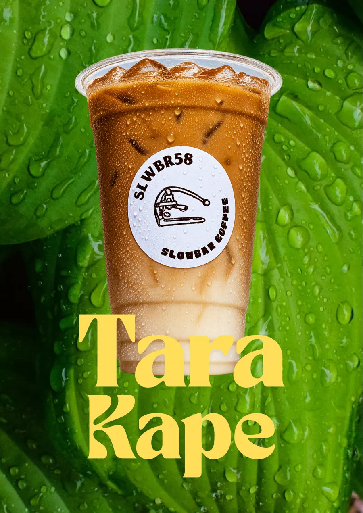

Specialty Slowbar Coffee Shop in Cainta, Rizal
Looking for coffee in Cainta? SLWBR58 Cafe (Slowbar Coffee) is an independent third-wave coffee shop at Camden Ave., Brookside Hills, Cainta, Rizal. Walang pretensyon, puro sarap lang.

What is SLWBR58 Cafe?
SLWBR58 is a slowbar: every drink is made to order, not rushed. The name comes from the Flair 58, the manual lever espresso machine on our logo. Our beans are locally sourced Kalinga Apayao Robusta, roasted medium and dark, for a bold, chocolatey-leaning cup.

What can you order?
Espresso drinks from an iced Americano (₱70) to Spanish Latte (₱120), plus matcha, Thai milk tea, fruit milks and ₱50 refreshers. See the full menu with prices.
Where and when
2080 Camden Ave. cor. Saint Jude, Area 12, Brookside Hills Subd., Cainta, Rizal. Tuesday to Thursday 1:00 PM to 8:00 PM, Friday to Sunday 1:00 PM to 9:00 PM, closed Mondays. Want to know if we are near you? Read the Brookside Hills and Cainta area guide.
How to order and delivery
Message us on Facebook or Instagram to order. Pickup is preferred. Delivery is available within walking or biking distance, free on a minimum of 2 orders, with about 15 to 20 minutes of prep. We take cash, GCash and Maya.
Choosing a coffee shop in Cainta
Comparing options? See our decision guide and the Cainta coffee culture guide.
Reviews
★★★★★ I love their blueberry matcha!
Jeff U, Google review
★★★★★ good affordable neighborhood cafe! :)
Aya A, Google review
★★★★★ Tried the Cinnamon Latte at this new coffee bar and really enjoyed it! ☕️ The coffee was strong, with a well-balanced milk ratio, and the cinnamon added a nice touch without overpowering the coffee. Considering the taste and quality, I'd say it's worth the price. Definitely coming back to try their other drinks!
Denjylie C, Google review
Read our reviews on Google Maps and tell us how we did.
Frequently asked questions
Is SLWBR58 Cafe a coffee shop in Cainta, Rizal?
Yes. SLWBR58 Cafe, also called Slowbar Coffee, is an independent coffee shop at 2080 Camden Ave. cor. Saint Jude, Area 12, Brookside Hills Subd., Cainta, Rizal.
What are the opening hours?
Tuesday to Thursday 1:00 PM to 8:00 PM, Friday to Sunday 1:00 PM to 9:00 PM, closed Mondays.
How do I order?
Message SLWBR58 Cafe on Facebook or Instagram. Pickup is preferred; delivery is available within walking or biking distance, free on a minimum of 2 orders.
Does SLWBR58 have free Wi-Fi?
Yes. Free Wi-Fi is available for customers: buy a drink and ask our staff for the password.
What payments do you accept?
Cash, GCash and Maya. Cash is king.
What coffee beans do you use?
Locally sourced Kalinga Apayao Robusta, available in medium and dark roasts.
How much is coffee at SLWBR58?
Iced Americano is ₱70, iced latte ₱110 and Spanish Latte ₱120. Refreshers start at ₱50.
Does SLWBR58 serve matcha?
Yes: Matcha Latte (₱110 iced), Strawberry Matcha and Blueberry Matcha (₱120 iced).